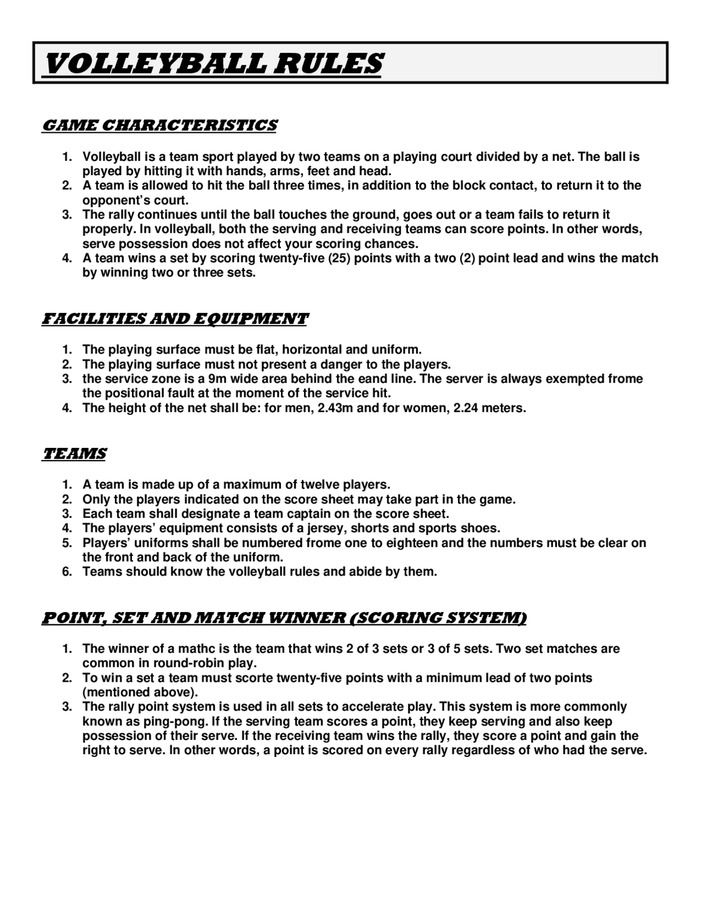
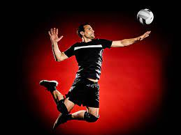
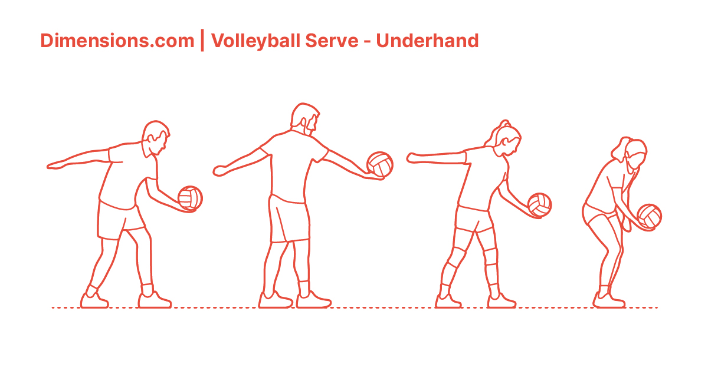
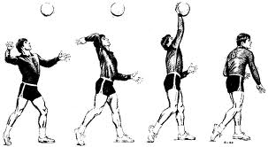
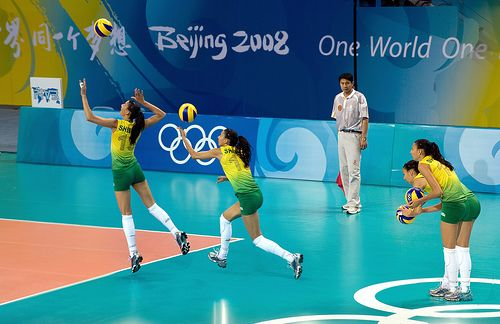
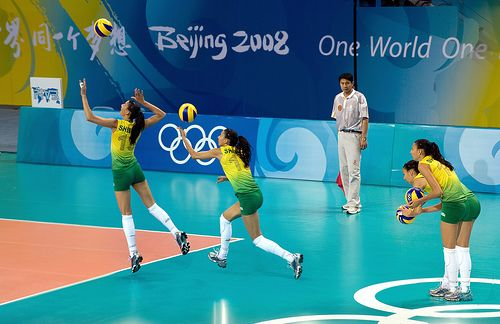
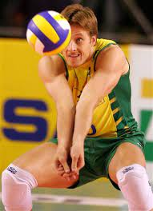

RULES

The complete rules are extensive. But simply, play proceeds as follows: a player on one of the teams begins a 'rally' by serving the ball (tossing or releasing it and then hitting it with a hand or arm), from behind the back boundary line of the court, over the net, and into the receiving team's court. The receiving team must not let the ball be grounded within their court. The team may touch the ball up to 3 times but individual players may not touch the ball twice consecutively. Typically, the first two touches are used to set up for an attack, an attempt to direct the ball back over the net in such a way that the serving team is unable to prevent it from being grounded in their court. For a complete list of rules click
here
.
SERVING

Serving is one of the important aspects of the game. The player stands behind the inline of their court and serves the ball. The goal is to get the ball over the net and land on the opposing team's court. The serving player will also try to make the ball more difficult for the opposing team to receive by adding different elements to the serve. A service ace occurs when the ball lands directly on the opposing team's court or lands outside the court after contacting an opponent.
There are many types of serves that players use.

UNDERHAND SERVING: the underhand serve is a basic serve that is easy to learn and reliable in getting the ball to the other side of the court, but is consider by many to be very easy to receive. The player strikes the ball with a fist from below the waist opposed to throwing it up and hitting it with an overhand motion. For instructions on how to perform this serve click
here

OVERHAND TOPSPIN SERVE: an overhand serve where the player tosses the ball high and hits it with a wrist span, giving it topspin which causes it to drop faster than it would otherwise and helps maintain a straight flight path. Topspin serves are generally hit hard and aimed at a specific returner or part of the court. Standing topspin serves are rarely used above the high school level of play. For instructions on how to perform this type of serve click
here
 TOPSPIN JUMP SERVE: an overhand serve where the ball is first tossed high in the air, then the player makes a timed approach and jumps to make contact with the ball, hitting it with much pace and topspin. This is the most popular serve amongst college and professional teams. For instructions on how to perform this type of serve, click
here
TOPSPIN JUMP SERVE: an overhand serve where the ball is first tossed high in the air, then the player makes a timed approach and jumps to make contact with the ball, hitting it with much pace and topspin. This is the most popular serve amongst college and professional teams. For instructions on how to perform this type of serve, click
here
 Float Serve: an overhand serve where the ball is hit with no spin so that its path becomes unpredictable, akin to a knuckleball in baseball. For instructions on how to perform this type of serve, click
here
JUMP FLOAT SERVICE

an overhand serve where the ball is tossed high enough that the player may jump before hitting it similarly to a standing float serve. The ball is tossed lower than a topspin jump serve, but contact is still made while in the air. This serve is becoming more popular amongst college and professional players because it has a certain unpredictability in its flight pattern. It is the only serve where the server's feet can go over the inline. For instructions on how to perform this type of serve, click
here
Float Serve: an overhand serve where the ball is hit with no spin so that its path becomes unpredictable, akin to a knuckleball in baseball. For instructions on how to perform this type of serve, click
here
JUMP FLOAT SERVICE

an overhand serve where the ball is tossed high enough that the player may jump before hitting it similarly to a standing float serve. The ball is tossed lower than a topspin jump serve, but contact is still made while in the air. This serve is becoming more popular amongst college and professional players because it has a certain unpredictability in its flight pattern. It is the only serve where the server's feet can go over the inline. For instructions on how to perform this type of serve, click
here
PASSING

Also called reception, the pass is the attempt by a team to properly handle the opponent's serve, or any form of attack. Proper handling includes not only preventing the ball from touching the court, but also making it reach the position where the setter is standing quickly and precisely.
The skill of passing involves fundamentally two specific techniques: underarm pass, or bump, where the ball touches the inside part of the joined forearms or platform, at waist line; and overhand pass, where it is handled with the fingertips, like a set, above the head. Either are acceptable in professional and beach volleyball, however there are much tighter regulations on the overhand pass in beach volleyball.